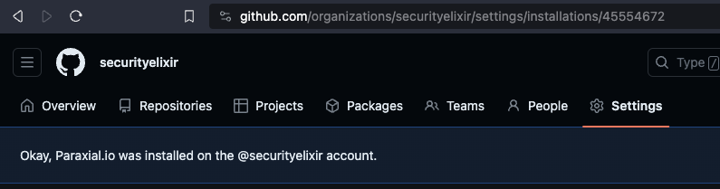

GitHub App
This guide to installing the Paraxial.io GitHub App assumes you are using GitHub Actions for CI/CD. The app is compatible with other providers (CircleCI, etc).
For an overview of why the GitHub App is useful, see the blog post Introducing the Paraxial.io GitHub App
1. Create a Paraxial.io site, install the agent

Why install the Paraxial.io agent locally if the goal is to run the Github app in CI/CD? This is for developer experience and happiness. A CI run can take minutes to complete, and the cycle of "make a code change, wait several minutes for CI to finish" slows down developer productivity. By running the check locally, the debugging loop is much faster.
Note: You MUST use version 2.6.3 or later. Earlier versions do not support the GitHub App.
mix.exs
{:paraxial, "~> 2.8.4"}
mix deps.get
Install the Paraxial.io agent in mix.exs, then configure dev.exs and prod.exs.
config/dev.exs
config :paraxial,
paraxial_api_key: System.get_env("PARAXIAL_API_KEY")
config/prod.exs
config :paraxial,
paraxial_api_key: System.get_env("PARAXIAL_API_KEY")
For the GitHub app we really only need dev.exs, however the reason you want this in both environments is for the additional runtime protection features of Paraxial.io.
Set the environment variable in your terminal with:
$ export PARAXIAL_API_KEY=df90...redacted...
This key is found in the "Site Settings" page. Now run:
% mix deps.compile
% mix paraxial.scan
13:35:00.130 [info] [Paraxial] API key found, scan results will be uploaded
...
13:35:01.905 [info] [Paraxial] Scan written successfully. UUID 4b6a5fe3-626a-46e5-a959-6008f6114a74
This confirms Paraxial.io is installed and working locally.
2. Install the Paraxial.io GitHub App, get the install_id.
The Paraxial.io App can be installed in an organization or individual account. GitHub Marketplace - https://github.com/marketplace/paraxial-io

Note the install_id of 45554672. Your value will be different. Make a note of this value somewhere, you will need it later.
The Paraxial.io Github App is compatible with all CI/CD pipelines. We will be using a Github Action in this example. The following is required:
- Paraxial.io App Install ID (
45554672in this example, your value will be different) - Repo Owner
- Repo Name
- Pull Request number
The dynamic values should be accessible in your CI environment.
3. Put the Paraxial.io API key in GitHub Actions Secrets
This secret key is found in "Site Settings" in the Paraxial.io web interface.


4. Configure the GitHub Action
Before continuing, answer the following questions:
Q: What is the name of your repo's primary branch? (It is probably master or main)
If your repo's branch is different, replace the "branches" value.
Q: If Paraxial.io detects security problems, do you want the build to fail?
If you do not want the build to fail when security issues are detected, remove the --add-exit-code flag.
Q: What is your Paraxial.io Github App Install ID?
See the section above
GitHub Action:
.github/workflows/elixir.yml
name: Paraxial.io Application Secure
on:
push:
branches: [ "master" ]
pull_request:
branches: [ "master" ]
permissions:
contents: read
jobs:
build:
name: Build and test
runs-on: ubuntu-latest
env:
PARAXIAL_API_KEY: ${{ secrets.PARAXIAL_API_KEY }}
steps:
- uses: actions/checkout@v3
- name: Set up Elixir
uses: erlef/setup-beam@61e01a43a562a89bfc54c7f9a378ff67b03e4a21 # v1.16.0
with:
elixir-version: '1.15.2' # [Required] Define the Elixir version
otp-version: '26.0' # [Required] Define the Erlang/OTP version
- name: Restore dependencies cache
uses: actions/cache@v3
with:
path: deps
key: ${{ runner.os }}-mix-${{ hashFiles('**/mix.lock') }}
restore-keys: ${{ runner.os }}-mix-
- name: Install dependencies
run: mix deps.get
- name: Compile dependencies
run: mix deps.compile
- name: Get Github Repo Name
run: echo "REPO_NAME=$(echo ${{ github.repository }} | cut -d'/' -f2)" >> $GITHUB_ENV
- name: Paraxial.io Scan, pull request does not exists
if: "${{ github.event.number == '' }}"
run: |
mix paraxial.scan --sobelow-config --add-exit-code
- name: Paraxial.io Scan, pull request exists
if: "${{ github.event.number != '' }}"
run: |
mix paraxial.scan --github_app \
--install_id REPLACE_THIS_VALUE \
--repo_owner ${{ github.repository_owner }} \
--repo_name ${{ env.REPO_NAME }} \
--pr_number ${{ github.event.number }} \
--sobelow-config \
--add-exit-code
Example of a successful run:
mix paraxial.scan --github_app \
--install_id 45233668 \
--repo_owner realcorvus \
--repo_name priv_potion_shop \
--pr_number 25 \
--add-exit-code
shell: /usr/bin/bash -e {0}
env:
PARAXIAL_API_KEY: ***
INSTALL_DIR_FOR_OTP: /opt/hostedtoolcache/otp/ubuntu-22.04/OTP-26.0.2/x64
INSTALL_DIR_FOR_ELIXIR: /opt/hostedtoolcache/elixir/1.15.2-otp-26/x64
REPO_NAME: priv_potion_shop
18:20:28.518 [info] [Paraxial] API key found, scan results will be uploaded
[Paraxial] Scan findings: %Paraxial.Scan{
timestamp: ~U[2024-01-01 18:20:30.840501Z],
findings: [
%Paraxial.Finding{
source: "sobelow",
content: %{
"confidence" => "high_confidence",
"file" => "lib/carafe_web/controllers/potion_controller.ex",
"line" => 29,
"type" => "Misc.BinToTerm: Unsafe `binary_to_term`",
"variable" => "cursor_bin"
}
...
api_key: "REDACTED"
}
[Paraxial] Github Upload info: %{
"api_key" => "REDACTED",
"installation_id" => "45233668",
"pull_request_number" => "25",
"repository_name" => "priv_potion_shop",
"repository_owner" => "realcorvus",
"scan_uuid" => "e381fb5b-af18-4abc-b782-3c7acda6368d"
}
18:20:31.205 [info] [Paraxial] Scan written successfully. UUID e381fb5b-af18-4abc-b782-3c7acda6368d
18:20:31.205 [info] [Paraxial] Github App Correct Arguments
18:20:33.148 [info] [Paraxial] Github PR Comment Created successfully
18:20:33.148 [info] [Paraxial] URL: (Pull request url here)
Error: Process completed with exit code 1.
Troubleshooting:
- What version of the Paraxial.io agent is running in CI/CD? Check your lock file. You must use version
2.6.3or later for the GitHub App to work.
5. Open a Pull Request
You should have completed the following by now:
-
Installed the Paraxial.io GitHub App
-
Configured
mix paraxial.scan --github_appto run in CI/CD -
Put the correct Paraxial.io Site API Key into the CI/CD pipeline
To use the Paraxial.io app, open a pull request:

If no issues are found, you will get a green check comment: